pacman::p_load(sf, tmap, tidyverse, dplyr, rvest, lubridate, spatstat, sparr, stpp, sfdep, spdep, Kendall, purrr)Take-home Exercise 2:
Overview
Urban mobility refers to the movement of people and goods within and between cities, spanning all modes of transport such as walking, cycling, public transit, private vehicles, and freight. Driven by factors like population growth and climate change, urban mobility planning aims to create smart, efficient, and sustainable networks that reduce congestion and emissions while enhancing quality of life and economic vitality. Key developments include the rise of shared mobility services, autonomous vehicles, and integrated smart systems that prioritize user experience, safety, and inclusivity in urban environments.
As city-wide urban infrastructures such as buses, taxis, mass rapid transit, public utilities and roads become digital, the datasets obtained can be used as a framework for tracking movement patterns through space and time. This is especially true with the widespread deployment of pervasive computing technologies such as smart cards, GPS, and RFID in vehicles. For example, routes and ridership data were collected with the use of smart cards and Global Positioning System (GPS) devices available on the public buses. These large-scale movement datasets often contain patterns that reveal important characteristics of urban mobility. Identifying and analyzing such patterns can deepen our understanding of human mobility, supporting better urban management. For both public and private transport providers, these insights enable more informed decisions and improved service planning.
In real-world practices, the use of these massive locational aware data to gain better urban mobility patterns and trends, however, tend to be confined to simple tracking and mapping with GIS applications. This is mainly because conventional GIS tools lack robust geospatial statistics capabilities for analyzing and modeling spatial and spatio-temporal data.
Datasets
Aspatial data
For the purpose of this take-home exercise, the latest month Passenger Volume by Origin Destination Bus Stops downloaded from LTA DataMall will be used.
Geospatial data
Two geospatial data will be used in this study, they are:
Bus Stop Location from LTA DataMall. It provides information about all the bus stops currently being serviced by buses, including the bus stop code (identifier) and location coordinates.
Master Plan 2019 Subzone Boundary (No Sea) from Singapore’s open data portal.
Installing and Loading the R packages
The following code chunk will be used to load the R packages which we will require for our analysis.
Importing and Preparing the Data
Importing the Study Area
We import the Master Plan 2019 Subzone polygons, drop any Z/M dimensions that aren’t needed for 2D analysis and transform the data into SVY21/EPSG:3414 which is the common projected CRS used for Singapore. Using a consistent projected CRS ensures distance or area calculations and overlays behave correctly.
Using SVY21 / EPSG:3414 standardises all geometry into a projected CRS suitable for distance and area operations in Singapore. Dropping Z/M ensures a clean 2D topology so overlays, contiguity, and grid generation behave as expected.
The following code chunk will import the masterplan data, removes the Z (elevation) and M (measure) dimension, and transforms into SVY21.
#|eval: false
mpsz_sf <- st_read("data/geospatial/MasterPlan2019SubzoneBoundaryNoSeaKML.kml") %>%
st_zm(drop = TRUE, what = "ZM") %>% st_transform(crs = 3414)Reading layer `URA_MP19_SUBZONE_NO_SEA_PL' from data source
`C:\Users\zongy\OneDrive\Desktop\SMU\ISSS626 - Geospatial Analytics\zongyin-tan\ISSS626-Geospatial-zytan\Take-home_Ex\Take-home_Ex2\data\geospatial\MasterPlan2019SubzoneBoundaryNoSeaKML.kml'
using driver `KML'
Simple feature collection with 332 features and 2 fields
Geometry type: MULTIPOLYGON
Dimension: XY
Bounding box: xmin: 103.6057 ymin: 1.158699 xmax: 104.0885 ymax: 1.470775
Geodetic CRS: WGS 84Outlying islands are excluded to keep the analysis focused on the contiguous urban network of the main island where bus services and OD demand are dense and comparable.
The following code chunk will be use to filter the unwanted areas as we will be focused on the main island of Singapore.
#|eval: false
extract_kml_field <- function(html_text, field_name) {
if (is.na(html_text) || html_text == "") return(NA_character_)
page <- read_html(html_text)
rows <- page %>% html_elements("tr")
value <- rows %>%
keep(~ html_text2(html_element(.x, "th")) == field_name) %>%
html_element("td") %>%
html_text2()
if (length(value) == 0) NA_character_ else value
}
mpsz_sf <- mpsz_sf %>%
mutate(
REGION_N = map_chr(Description, extract_kml_field, "REGION_N"),
PLN_AREA_N = map_chr(Description, extract_kml_field, "PLN_AREA_N"),
SUBZONE_N = map_chr(Description, extract_kml_field, "SUBZONE_N"),
SUBZONE_C = map_chr(Description, extract_kml_field, "SUBZONE_C")
) %>%
select(-Name, -Description) %>%
relocate(geometry, .after = last_col())
mpsz_cl <- mpsz_sf %>%
filter(SUBZONE_N != "SOUTHERN GROUP",
PLN_AREA_N != "WESTERN ISLANDS",
PLN_AREA_N != "NORTH-EASTERN ISLANDS")#|eval: false
#|echo: false
write_rds(mpsz_cl,
"data/rds/mpsz_cl.rds")#|echo: false
mpsz_cl <- read_rds("data/rds/mpsz_cl.rds")Importing the “Bus Stop Location” Data
We import the Bus Stop Location dataset from LTA DataMall. This dataset contains all active bus stops in Singapore along with their coordinates. We then transform it into the same SVY21 coordinate system as the Master Plan data so that both layers align perfectly when plotted or joined later.
BusStop = st_read(dsn = "data/geospatial/",
layer = "BusStop")Reading layer `BusStop' from data source
`C:\Users\zongy\OneDrive\Desktop\SMU\ISSS626 - Geospatial Analytics\zongyin-tan\ISSS626-Geospatial-zytan\Take-home_Ex\Take-home_Ex2\data\geospatial'
using driver `ESRI Shapefile'
Simple feature collection with 5172 features and 2 fields
Geometry type: POINT
Dimension: XY
Bounding box: xmin: 3970.122 ymin: 26482.1 xmax: 48285.52 ymax: 52983.82
Projected CRS: SVY21BusStop <- st_transform(BusStop, 3414)Importing the “Passenger Volume by Origin Destination Bus Stops” Data
We then load the Passenger Volume by Origin–Destination Bus Stops data from LTA DataMall using read_csv(). This dataset records the number of passengers traveling between origin and destination bus stops. It’s an aspatial dataset, meaning it contains no coordinates yet.
odbus <- read_csv("data/aspatial/origin_destination_bus_202509.csv")#|eval: false
#|echo: false
write_rds(odbus,
"data/rds/odbus.rds")#|echo: false
odbus <- read_rds("data/rds/odbus.rds")Extracting the Bus Stops within Singapore
Not all bus stops in the LTA dataset are located within the main island. In this step, we perform a spatial join between the bus stop data and the Master Plan subzones to keep only those bus stops located within the mainland boundary. This ensures that our later analysis only includes relevant bus stops in Singapore’s main island.
BusStop_in_SG <- st_join(
BusStop, mpsz_cl,
join = st_within,
left = FALSE)#|eval: false
#|echo: false
write_rds(BusStop_in_SG,
"data/rds/busstop.rds")#|echo: false
BusStop_in_SG <- read_rds("data/rds/busstop.rds")
Important
Keeping only stops that fall within the main island prevents stray records (depots or offshore stops) from entering the analysis. This also makes neighbour structures more regular along the coastline.
Mapping the Study Area and Bus Stop Locations
The following code chunk creates a simple map using tmap to visualize the study area and all the bus stops that fall within it. This quick check helps confirm that our datasets are properly aligned and that the spatial join worked correctly before we move on.
tm_shape(mpsz_cl) +
tm_polygons() +
tm_shape(BusStop_in_SG) +
tm_dots()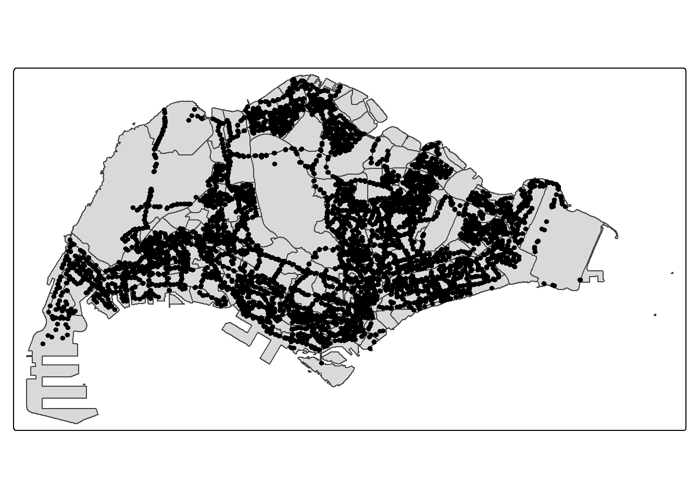
The alignment check shows bus stops distributing along the road network and transit corridors, confirming a correct CRS and a successful spatial join before aggregation.
Deriving the 375m Hexagon TAZ Layer
We first create a regular hexagon grid to act as Traffic Analysis Zones. As the perpendicular distance from the hexagon center to a side is 375m, that means the distance between opposite sides is 750 m. We build a hex grid that covers the study area, clip it to the mainland boundary and assign an ID to each cell.
hex_grid <- st_make_grid(
mpsz_cl,
cellsize = 750,
square = FALSE,
what = "polygons"
) %>%
st_as_sf() %>%
st_intersection(mpsz_cl)Cleaning the Grid
Clipping can introduce tiny geometry issues or empty pieces. Here we make geometries valid and drop any empty cells. This keeps later neighbour building stable.
hex_grid <- hex_grid %>%
st_make_valid() %>%
filter(!st_is_empty(st_geometry(.)))
nrow(hex_grid)[1] 3254Giving Each Hexagon an ID
Local statistics and joins are much easier when every zone has a stable key. We add a running ID to the grid that we will carry through the whole workflow.
hex_grid <- hex_grid %>%
mutate(hex_id = row_number()) %>%
relocate(hex_id)Creating a Canonical Hexagon Base and Spatial Weights
We define how each hexagon relates to nearby cells using queen contiguity (touching by edge or corner) and convert those relationships into row-standardised weights. This provides the local context Gi* and Moran’s I need to judge whether a hexagon sits inside a cluster of similarly high or low values.
We use queen contiguity to capture both edge- and corner-touching neighbours, which is standard for hex grids and avoids over-sparse networks. For Gi* we include self-neighbours, while for Local Moran’s I we intentionally exclude self so the cell is compared to its surroundings. Weights are row-standardised (W) so each cell contributes equally regardless of its degree.
hex_base <- hex_grid
nb_q <- st_contiguity(hex_base)
has_nb <- card(nb_q) > 0
hex_base <- hex_base[has_nb, ]
nb_q <- st_contiguity(hex_base)
lw_q <- st_weights(nb_q, style = "W")
nb_star <- include_self(nb_q)
lw_star <- nb2listw(nb_star, style = "W")
wt_star <- lw_star$weights
# ---------------------------------------------
summary(card(nb_q)) Min. 1st Qu. Median Mean 3rd Qu. Max.
1.000 6.000 6.000 6.634 8.000 15.000 Visualising Neighbour Counts
A simple neighbour count map helps confirm that contiguity looks reasonable and highlights edge cells with fewer links.
hex_base <- hex_base %>% mutate(n_nb = card(nb_q))
tmap_mode("plot")
tm_shape(hex_base) +
tm_polygons(col = "n_nb",
palette = "Blues",
title = "Neighbour count") +
tm_borders(alpha = 0.4) +
tm_layout(frame = FALSE)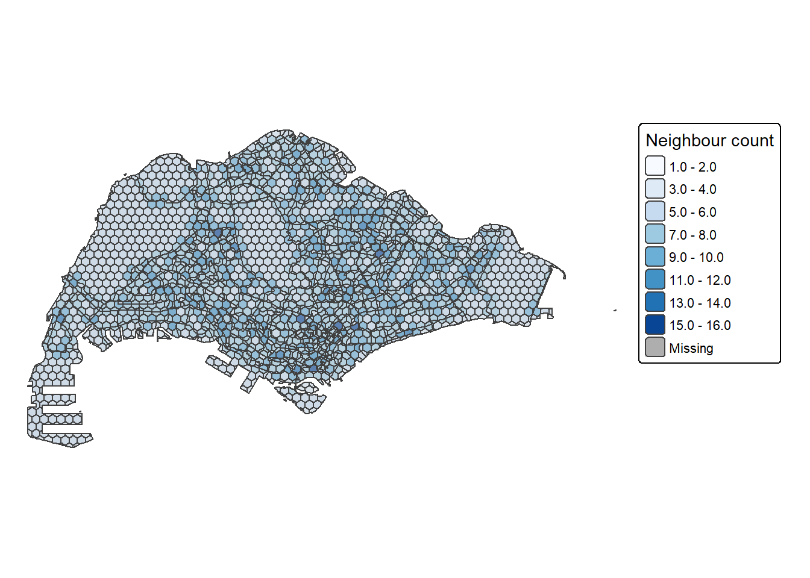
Interior cells cluster around 6–8 neighbours. Lower counts along coasts signal edge effects; row-standardising helps reduce their influence in the local statistics.
Assigning Bus Stops to Hexagons
Each stop inherits a hex_id, providing the lookup that moves from point-based OD to zone-based indicators. This step is crucial as it converts irregular stop spacing into a comparable lattice for clustering tests.
st_agr(BusStop_in_SG) <- "constant"
stops_hex <- BusStop_in_SG %>%
st_join(select(hex_base, hex_id), join = st_within) %>%
st_drop_geometry() %>%
select(BUS_STOP_N, hex_id)
head(stops_hex) BUS_STOP_N hex_id
1 65059 2026
2 16171 274
3 61101 619
4 01239 2251
5 17269 310
6 11291 872Preparing OD trips for time-of-day analysis
We keep only valid, typed fields and harmonise names so later joins and group-bys are robust. Removing NAs avoids silently dropping cells during significance testing.
od <- odbus %>%
rename(
ORI = ORIGIN_PT_CODE,
DES = DESTINATION_PT_CODE,
HOUR = TIME_PER_HOUR,
DTYPE = DAY_TYPE,
TRIPS = TOTAL_TRIPS) %>%
mutate(
ORI = as.character(ORI),
DES = as.character(DES),
HOUR = as.integer(HOUR),
TRIPS = as.numeric(TRIPS)
) %>%
filter(!is.na(ORI), !is.na(DES), !is.na(HOUR), !is.na(TRIPS))Linking origin stops to hexagons
We join each origin stop code to the hexagon that contains it, using the lookup already created. We keep only origin codes that successfully match a hex ID so that we can aggregate trips by hexagon and period.
ori_lookup <- stops_hex %>% rename(ORI = BUS_STOP_N, hex_id_o = hex_id)
od_ohex <- od %>%
left_join(ori_lookup, by = "ORI") %>%
filter(!is.na(hex_id_o))Defining the three time windows
We tag each record into one of the three study windows. Weekday morning is hours 6 to 8, weekday afternoon is hours 17 to 19 and weekend or holiday is hours 11 to 19. This will help reflect distinct travel behaviours, morning commute origins, evening return flows and diffuse leisure activity.
The following code chunk will label each OD record into one of the three study windows.
od_tagged <- od_ohex %>%
mutate(
DTYPE_C = toupper(trimws(DTYPE)),
DTYPE_C = case_when(
DTYPE_C == "WEEKDAY" ~ "WEEKDAY",
grepl("WEEKEND", DTYPE_C) | grepl("HOLIDAY", DTYPE_C) ~ "WEEKEND",
TRUE ~ DTYPE_C
),
PERIOD = case_when(
DTYPE_C == "WEEKDAY" & HOUR %in% 6:8 ~ "AM peak",
DTYPE_C == "WEEKDAY" & HOUR %in% 17:19 ~ "PM peak",
DTYPE_C == "WEEKEND" & HOUR %in% 11:19 ~ "Weekend",
TRUE ~ NA_character_
)
) %>%
filter(!is.na(PERIOD))Summarising origin-generated trips at hexagon level
We sum trips by origin hexagon within each period and join the totals back to the canonical grid. Missing combinations are set to zero so every zone has a valid value and maps and statistics are computed on the same geometry.
hex_trips <- od_tagged %>%
group_by(hex_id_o, PERIOD) %>%
summarise(TRIPS = sum(TRIPS, na.rm = TRUE), .groups = "drop") %>%
rename(hex_id = hex_id_o)Joining totals back to the canonical grid
We create three hex layers, one for each period, based on the same canonical grid used to build neighbours and weights. Missing values are set to zero so every zone has a numeric value.
hex_am <- hex_base %>%
left_join(filter(hex_trips, PERIOD == "AM peak") %>% select(hex_id, TRIPS),
by = "hex_id") %>%
mutate(TRIPS = ifelse(is.na(TRIPS), 0, as.numeric(TRIPS)))
hex_pm <- hex_base %>%
left_join(filter(hex_trips, PERIOD == "PM peak") %>% select(hex_id, TRIPS),
by = "hex_id") %>%
mutate(TRIPS = ifelse(is.na(TRIPS), 0, as.numeric(TRIPS)))
hex_wknd <- hex_base %>%
left_join(filter(hex_trips, PERIOD == "Weekend") %>% select(hex_id, TRIPS),
by = "hex_id") %>%
mutate(TRIPS = ifelse(is.na(TRIPS), 0, as.numeric(TRIPS)))Using summary() we can check if the layers created are in order.
summary(hex_am$TRIPS) Min. 1st Qu. Median Mean 3rd Qu. Max.
0 0 0 6303 4122 303684 summary(hex_pm$TRIPS) Min. 1st Qu. Median Mean 3rd Qu. Max.
0 0 0 6311 5192 461558 summary(hex_wknd$TRIPS) Min. 1st Qu. Median Mean 3rd Qu. Max.
0 0 0 4638 3249 265910 Mapping origin trips by period
We plot 3 choropleths using Jenks breaks and a single sequential palette. These maps will show where trip generation is highest in each period based on the assumptions:
Morning hot areas typically appear in residential regions (many boardings)
Evening maps reflect return flows
Weekend activity is more uniform with weaker contrasts.
tm_shape(hex_am) +
tm_polygons(
col = "TRIPS",
style = "jenks",
n = 6,
palette = "Blues",
title = "AM peak trips"
) +
tm_borders(alpha = 0.4) +
tm_layout(
frame = FALSE
)Origin trips are highest across large residential belts, especially in the east and north-east. This reflects strong morning boardings heading towards central employment zones. Central areas show fewer origin trips because they are predominantly destinations at this time.
tm_shape(hex_pm) +
tm_polygons(
col = "TRIPS",
style = "jenks",
n = 6,
palette = "Blues",
title = "PM peak trips"
) +
tm_borders(alpha = 0.4) +
tm_layout(
frame = FALSE
)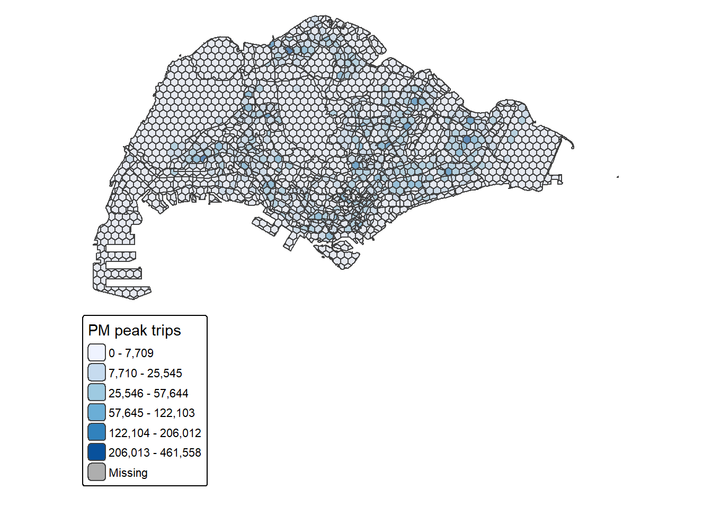
Origins are more dispersed. Elevated counts appear across inner-city and residential fringes, consistent with home-bound flows from many work locations. Compared with the AM peak, the spatial contrast softens as trips spread across multiple egress routes.
tm_shape(hex_wknd) +
tm_polygons(
col = "TRIPS",
style = "jenks",
n = 6,
palette = "Blues",
title = "Weekend trips"
) +
tm_borders(alpha = 0.4) +
tm_layout(
frame = FALSE
)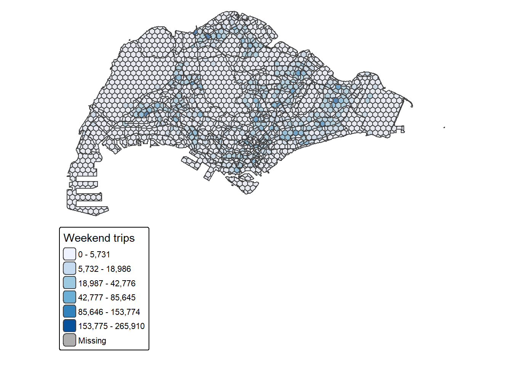
Origins are more even across the island, with fewer very high cells. This flatter pattern is consistent with leisure and shopping trips that start from many neighbourhoods instead of a few commuter nodes.
Local Measures of Spatial Association (LMSA) Analysis
We adopt the Getis–Ord Gi* statistic as the primary local spatial measure to identify statistically significant concentrations of high (“hot”) and low (“cold”) trip intensity across hexagonal zones. Gi* is directly aligned with our objective of detecting spatial clusters of OD demand and serves as the required input for Emerging Hot Spot Analysis (EHSA), which tracks how these clusters evolve over time. Local Moran’s I is retained as a brief supporting diagnostic to highlight potential high–low or low–high outliers at cluster edges. This structure provides a clear progression from spatial clustering (Gi*) to spatio-temporal trend detection (EHSA) while preserving outlier insights from Moran’s I.
LMSA - Getis-Ord Gi*
We use Local Getis–Ord Gi* to detect clusters of high (hot) and low (cold) origin trip intensity, accounting for each hexagon’s neighbours (queen contiguity, row-standardized, self-included). The continuous z-score map shows gradients; the banded map flags only statistically reliable clusters (90/95/99%). Gi* is our primary measure because it answers the planning question “Where are sustained concentrations of origin demand?“
lw_q_listw <- nb2listw(nb_q, style = "W")
wt_q <- lw_q_listw$weights
set.seed(2025)The following code chunk will be used to define our classifier helper to be used for each period. Gi* measures whether a hexagon sits inside a local concentration of high values (hot spot) or low values (cold spot), given its neighbours. We compute Gi* and translate the z-scores into simple significance bands (90/95/99%) so the maps clearly mark statistically meaningful clusters.
gi_compute_classify <- function(hex_sf, value_col = "TRIPS", nsim = 499) {
gi <- local_gstar_perm(
x = as.numeric(hex_sf[[value_col]]),
nb = nb_star,
wt = wt_star,
nsim = nsim
)
out <- bind_cols(hex_sf, gi)
out |>
mutate(
gi_band = case_when(
gi_star >= 2.58 ~ "Hot spot (99%)",
gi_star >= 1.96 ~ "Hot spot (95%)",
gi_star >= 1.65 ~ "Hot spot (90%)",
gi_star <= -2.58 ~ "Cold spot (99%)",
gi_star <= -1.96 ~ "Cold spot (95%)",
gi_star <= -1.65 ~ "Cold spot (90%)",
TRUE ~ "Not significant"
),
gi_band = factor(gi_band, levels = c(
"Hot spot (99%)","Hot spot (95%)","Hot spot (90%)",
"Not significant",
"Cold spot (90%)","Cold spot (95%)","Cold spot (99%)"
))
)
}gi_am <- gi_compute_classify(hex_am)
gi_pm <- gi_compute_classify(hex_pm)
gi_wknd <- gi_compute_classify(hex_wknd)tmap_mode("plot")
tm_shape(gi_am) +
tm_polygons(col = "gi_star",
palette = "RdBu",
style = "pretty",
title = "AM peak: Local Gi* (z)") +
tm_borders(alpha = 0.4) + tm_layout(frame = FALSE)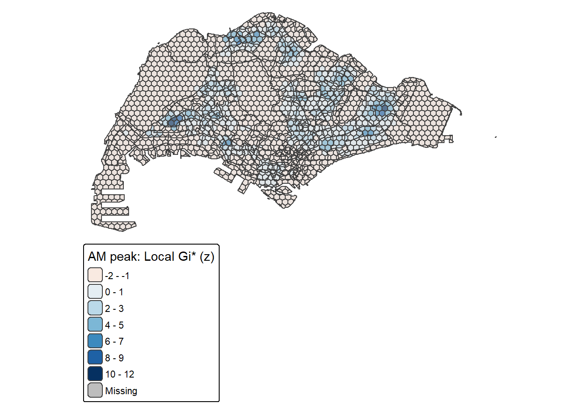
During the morning peak, most hexagons display neutral Gi* z-scores close to zero, suggesting that trip generation intensity is generally consistent across the island. However, several clusters of higher z-scores are observed in the north-eastern and eastern parts of Singapore, indicating local concentrations of heavy boarding activity in large residential towns. A smaller patch of elevated z-values appears in the western region. These blue-toned areas represent potential hot spot zones where multiple neighbouring hexagons share high trip counts. In contrast, negative or cold z-values are minimal and scattered, implying that there are few areas with significantly lower trip activity relative to their surroundings.
tm_shape(gi_am) +
tm_polygons(col = "gi_band",
palette = c("#990000","#d7301f","#fc8d59","#d9d9d9","#91bfdb","#4575b4","#313695"),
title = "AM peak: Hot/Cold significance") +
tm_borders(alpha = 0.4) + tm_layout(frame = FALSE)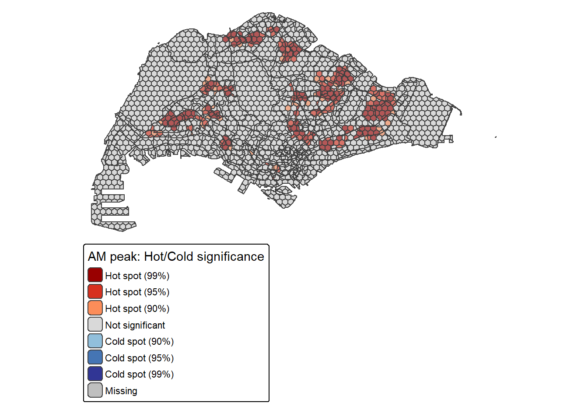
During the weekday morning peak, several statistically significant hot spots emerge across the eastern, north-eastern and western regions of Singapore. These clusters coincide with residential areas where many passengers begin their morning commutes. The concentration of high trip volumes within adjacent hexagons confirms strong local clustering of boarding activity. In contrast, no cold spots are detected. This is expected as central business districts are surrounded by moderate-activity areas that prevent them from forming statistically significant low-value clusters. Overall, the morning map shows distinct and consistent zones of high origin intensity, reflecting concentrated commuter flows from residential areas toward the city.
tmap_mode("plot")
tm_shape(gi_pm) +
tm_polygons(col = "gi_star",
palette = "RdBu",
style = "pretty",
title = "PM peak: Local Gi* (z)") +
tm_borders(alpha = 0.4) + tm_layout(frame = FALSE)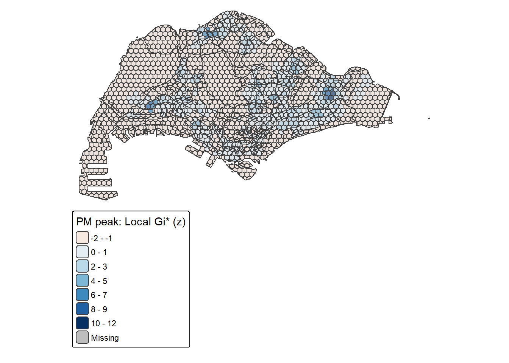
In the evening peak, the spatial pattern of Gi* z-scores remains similar to the morning but with generally weaker intensities. Blue-shaded areas persist in the eastern and north-eastern zones, though they appear more fragmented and less pronounced. This reflects the dispersion of return trips from employment centres toward residential areas, resulting in a more balanced distribution of trip origins. Most hexagons remain in neutral shades, showing that overall spatial clustering of trip generation is modest during the afternoon period.
tm_shape(gi_pm) +
tm_polygons(col = "gi_band",
palette = c("#990000","#d7301f","#fc8d59","#d9d9d9","#91bfdb","#4575b4","#313695"),
title = "PM peak: Hot/Cold significance") +
tm_borders(alpha = 0.4) + tm_layout(frame = FALSE)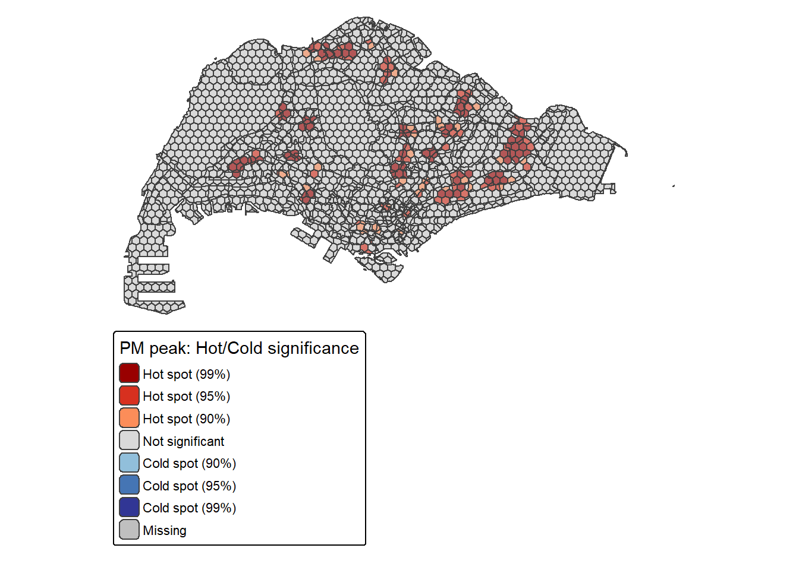
In the evening peak, hot spots remain visible across similar residential regions in the east and west but appear more spatially dispersed compared to the morning pattern. This dispersion reflects the return flow of commuters departing from various work locations and spreading across multiple residential destinations. The reduced clustering strength indicates that trip origins are more balanced across the network during the PM period. As in the morning, no cold spots are identified which suggests that low-origin areas are interspersed among moderate zones rather than forming distinct low-value clusters. The spatial pattern is therefore less polarized but still highlights key commuter corridors linked to the housing estates.
tmap_mode("plot")
tm_shape(gi_wknd) +
tm_polygons(col = "gi_star",
palette = "RdBu",
style = "pretty",
title = "Weekend/Holiday: Local Gi* (z)") +
tm_borders(alpha = 0.4) + tm_layout(frame = FALSE)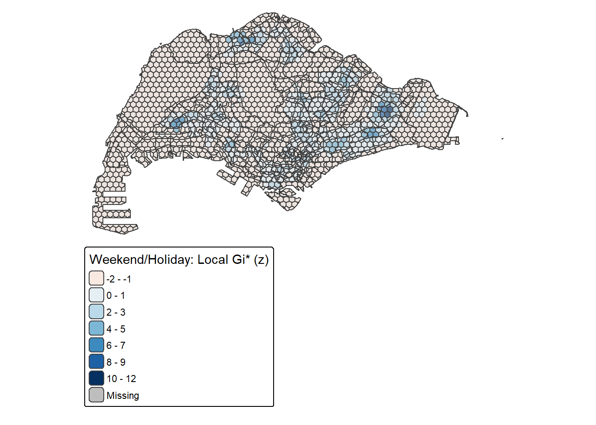
The weekend and holiday pattern exhibits the weakest clustering among all periods. Most hexagons fall within neutral z-score ranges, suggesting that trip generation is relatively even across the island. Only a few small blue patches are visible, mainly around suburban centres in the east and north-east. These areas likely represent localised concentrations linked to leisure or shopping activities. The overall spatial pattern appears diffuse, indicating that weekend travel is less structured and more evenly distributed compared to weekday commuting flows.
tm_shape(gi_wknd) +
tm_polygons(col = "gi_band",
palette = c("#990000","#d7301f","#fc8d59","#d9d9d9","#91bfdb","#4575b4","#313695"),
title = "Weekend/Holiday: Hot/Cold significance") +
tm_borders(alpha = 0.4) + tm_layout(frame = FALSE)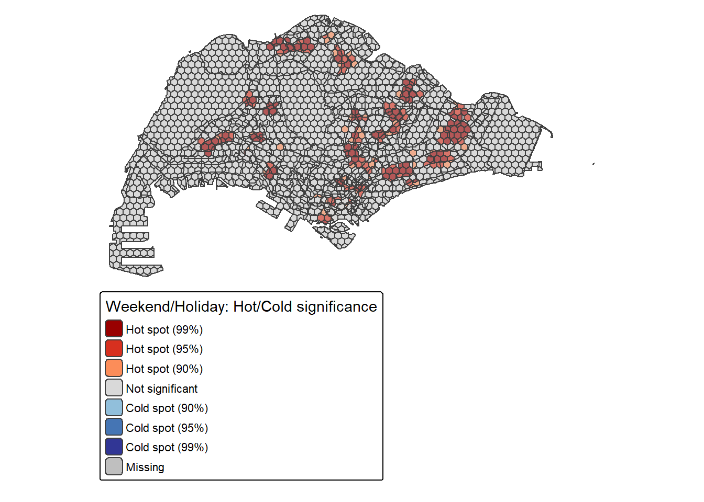
Weekend and holiday travel displays a similar but more diffuse pattern of hot spots with clusters again appearing in the eastern, north-eastern and western parts of Singapore. These areas correspond to major suburban centres and recreational hubs where leisure and shopping activities would attract higher trip volumes. The overall clustering strength is weaker than on weekdays, consistent with more irregular and dispersed travel behaviour. As with the weekday periods, no cold spots are observed, reaffirming that trip generation remains relatively even across the island with few areas consistently exhibiting low values. This reflects the more balanced, non-directional nature of weekend mobility.
Across all three periods, the Getis–Ord Gi* results reveal a consistent spatial structure of hot spot clusters in major residential regions located in the east, north-east and west parts of Singapore. These areas represent key trip-origin zones where large populations generate high volumes of bus boardings.
The clustering is strongest during the weekday morning peak, when commuting flows are highly directional from residential estates toward central employment zones. In the evening peak, hot spots remain in similar regions but become more scattered, reflecting commuters returning home through multiple routes. During weekends and holidays, hot spot intensity weakens further and spreads more evenly across the island, consistent with dispersed leisure and social travel.
The absence of significant cold spots throughout all periods indicates that trip generation is generally well distributed, with few areas persistently exhibiting low activity. Overall, the spatial pattern highlights Singapore’s clear residential-to-central commuting structure and the stability of high-demand zones across different time frames.
Important
The absence of cold spots is not a data or coding error. It arises naturally from the context and data type:
The analysis focuses on origin trips, which are inherently higher in residential zones and more evenly distributed elsewhere.
The central and commercial regions, though low in origins, are surrounded by mixed-use or moderate zones, preventing them from forming statistically distinct “cold clusters.”
Row-standardised weights and self-included neighbours also dampen low-value z-scores, meaning weak negatives rarely cross significance thresholds.
LMSA - Local Moran’s
Local Moran’s I is used as a supporting diagnostic to complement the Getis–Ord Gi* analysis. While Gi* identifies local concentrations of high or low trip intensity (hot and cold clusters), Local Moran’s I focuses on measuring spatial association (how similar or dissimilar a hexagon’s trip count is compared to its neighbours). It helps reveal spatial outliers such as unusually high cells surrounded by low values (High–Low) or low cells among high values (Low–High).
Local Moran’s I
Having identified the degree of spatial association in the previous step, we now categorize the Local Moran’s I results into meaningful cluster types. This helps to visualize where significant spatial groupings or outliers occur across Singapore.
hex_am_lisa_sig <- hex_am_lisa %>%
mutate(
cluster_type = case_when(
p_ii < 0.05 & lag_z > 0 & z > 0 ~ "High-High",
p_ii < 0.05 & lag_z < 0 & z < 0 ~ "Low-Low",
p_ii < 0.05 & lag_z > 0 & z < 0 ~ "Low-High",
p_ii < 0.05 & lag_z < 0 & z > 0 ~ "High-Low",
TRUE ~ "Not Significant"
)
)tm_shape(hex_am_lisa_sig) +
tm_polygons(
col = "cluster_type",
palette = c("red", "blue", "orange", "lightblue", "grey"),
title = "LISA Cluster Map – AM Peak Trips"
) +
tm_layout(frame = FALSE)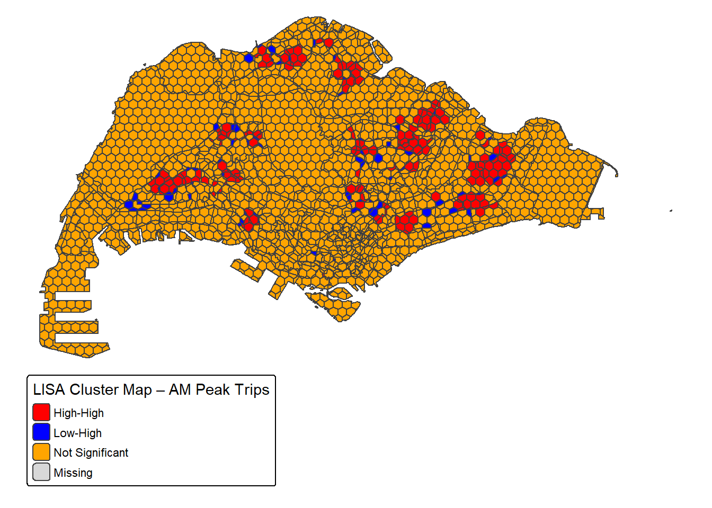
The AM peak map shows several distinct High–High (HH) clusters concentrated in the east, north-east and west of Singapore. These correspond to areas where high trip counts are surrounded by similarly high neighbours which are primarily large residential estates generating strong morning boarding activity. A few Low–High (LH) outliers appear nearby, representing zones with lower trip counts adjacent to high-activity areas, likely small stops within otherwise busy residential corridors. These patterns align closely with the earlier Local Moran’s I values, which indicated moderate positive spatial autocorrelation in the same regions. The overall result confirms that morning trips form stable and concentrated clusters of high activity, consistent with directional commuter flows from residential to central areas.
The afternoon period reflects the return flow from employment areas to residential areas. We repeat the same steps used for the morning peak so that results are comparable. First we make sure the trip column has no missing values. Then we compute Local Moran’s I using the same queen contiguity neighbours and the same row-standardised weights. Finally we map the statistic and produce a LISA cluster map that classifies each hexagon into high–high, low–low, or outlier types based on significance.
Local Moran’s I
hex_pm <- hex_pm %>%
mutate(TRIPS = as.numeric(TRIPS),
TRIPS = ifelse(is.na(TRIPS), 0, TRIPS))
pm_lisa <- local_moran(
x = hex_pm$TRIPS,
nb = nb_q,
wt = wt_q,
nsim = 499
)
pm_lisa <- pm_lisa %>%
mutate(
z = scale(hex_pm$TRIPS)[, 1],
lag_z = lag.listw(lw_q_listw, z)
)
hex_pm_lisa <- bind_cols(hex_pm, pm_lisa)tm_shape(hex_pm_lisa) +
tm_polygons(col = "ii",
palette = "RdBu",
title = "Local Moran’s I") +
tm_borders(alpha = 0.4) +
tm_layout(frame = FALSE)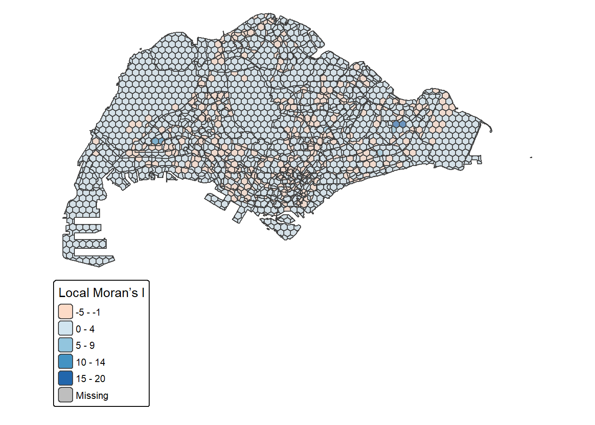
In the evening period, the spatial autocorrelation remains generally weak, similar to the AM pattern. Most cells have near-zero values, indicating little to no local dependency in trip generation. However, small pockets of higher positive values appear around the eastern and western residential regions, reflecting continued spatial similarity among neighbouring high-trip zones. Negative values are sparse and scattered, showing limited contrast between adjacent cells. This suggests that while commuting flows return toward residential areas, the degree of local clustering is less intense than during the morning peak.
Local Moran’s I Cluster Map
pm_lisa_sig <- hex_pm_lisa %>%
mutate(
cluster_type = case_when(
p_ii < 0.05 & lag_z > 0 & z > 0 ~ "High-High",
p_ii < 0.05 & lag_z < 0 & z < 0 ~ "Low-Low",
p_ii < 0.05 & lag_z > 0 & z < 0 ~ "Low-High",
p_ii < 0.05 & lag_z < 0 & z > 0 ~ "High-Low",
TRUE ~ "Not Significant"),
cluster_type = factor(
cluster_type,
levels = c("High-High","Low-Low","Low-High","High-Low","Not Significant")
)
)tm_shape(pm_lisa_sig) +
tm_polygons(
col = "cluster_type",
palette = c("High-High" = "red",
"Low-Low" = "blue",
"Low-High" = "royalblue3",
"High-Low" = "orange",
"Not Significant" = "goldenrod"),
title = "LISA Cluster Map – PM Peak Trips"
) +
tm_borders(alpha = 0.4) +
tm_layout(frame = FALSE)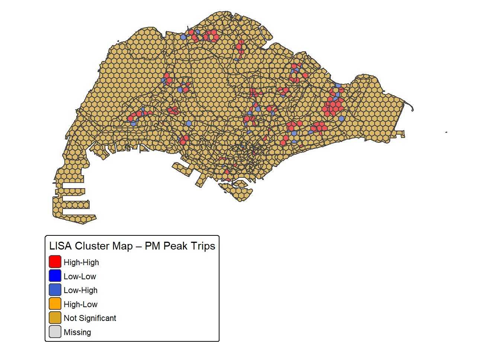
During the PM peak, High–High clusters persist in the same residential regions identified during the morning, though they appear smaller and more scattered. This suggests that while evening return trips remain concentrated around major housing estates, the spatial pattern is more dispersed due to multiple route options and staggered travel times. A few Low–Low (LL) and Low–High (LH) relationships emerge, indicating areas of weaker spatial association or minor contrasts between adjacent cells. Compared to the earlier Moran’s I plot, these clusters correspond with zones that maintained moderate positive values but at lower magnitudes, reflecting a gentler evening spatial pattern.
The weekend and holiday period captures non-commuting travel behaviour that differs substantially from weekday movement. Unlike the structured flows seen during morning and afternoon peaks, weekend trips are driven mainly by leisure, retail, and social activities. We apply the same analytical procedure used for weekday periods to ensure consistency. After confirming that all trip values are numeric and complete, Local Moran’s I is computed using the same queen contiguity neighbours and row-standardised spatial weights.
Local Moran’s I
wknd_lisa <- local_moran(
x = hex_wknd$TRIPS,
nb = nb_q,
wt = wt_q,
nsim = 499
)
wknd_lisa <- wknd_lisa %>%
mutate(
z = scale(hex_wknd$TRIPS)[, 1],
lag_z = lag.listw(lw_q_listw, z)
)
hex_wknd_lisa <- bind_cols(hex_wknd, wknd_lisa)tm_shape(hex_wknd_lisa) +
tm_polygons(col = "ii",
palette = "RdBu",
title = "Local Moran’s I") +
tm_borders(alpha = 0.4) +
tm_layout(frame = FALSE)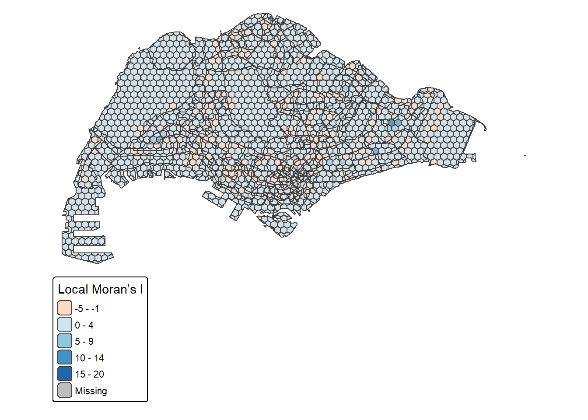
The weekend and holiday map displays the weakest overall autocorrelation among all periods. The vast majority of hexagons fall within near-zero ranges, implying that trip intensity varies independently between locations. Only small clusters in the east and west exhibit modest positive values, pointing to localised zones of similar boarding levels, likely related to leisure and shopping activity. Negative values remain minimal and isolated, suggesting little spatial contrast. The pattern reinforces the view that weekend travel is more diffuse and less spatially structured than weekday commuting flows.
Local Moran’s I Cluster Map
wknd_lisa_sig <- hex_wknd_lisa %>%
mutate(
cluster_type = case_when(
p_ii < 0.05 & lag_z > 0 & z > 0 ~ "High-High",
p_ii < 0.05 & lag_z < 0 & z < 0 ~ "Low-Low",
p_ii < 0.05 & lag_z > 0 & z < 0 ~ "Low-High",
p_ii < 0.05 & lag_z < 0 & z > 0 ~ "High-Low",
TRUE ~ "Not Significant"),
cluster_type = factor(
cluster_type,
levels = c("High-High","Low-Low","Low-High","High-Low","Not Significant")
)
)tm_shape(wknd_lisa_sig) +
tm_polygons(
col = "cluster_type",
palette = c(
"High-High" = "red",
"Low-Low" = "blue",
"Low-High" = "royalblue3",
"High-Low" = "orange",
"Not Significant"= "goldenrod"),
title = "LISA Cluster Map – Weekend/Holiday Trips") +
tm_borders(alpha = 0.4) +
tm_layout(frame = FALSE)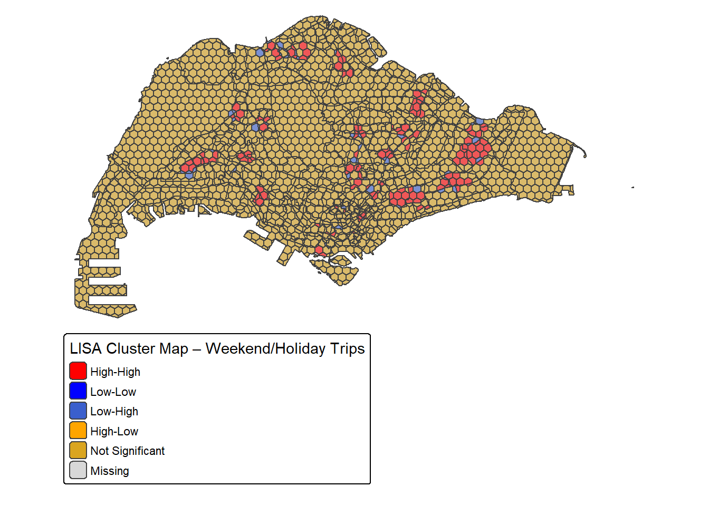
On weekends and holidays, the High–High clusters remain in similar areas as the weekday periods but appear more widely spread and less intense. These likely correspond to suburban centres and leisure destinations attracting consistent passenger activity. Scattered Low–High pockets are visible around these clusters, suggesting a mix of high- and low-demand stops within close proximity, typical of diverse weekend travel purposes. The map aligns with the earlier Local Moran’s I results, which showed generally weak spatial autocorrelation and limited clustering strength. Overall, the weekend pattern illustrates more balanced and flexible travel behaviour with localised concentrations but fewer strong clusters compared to weekday commuting.
Note
The Local Moran’s I and LISA cluster maps reveal that weekday AM trips exhibit the strongest and most cohesive spatial clustering, while PM and weekend trips become progressively weaker and more dispersed. The correlation between the high positive Moran’s I values and the High–High LISA clusters confirms that residential areas are consistently the key drivers of trip generation across all time periods.
The Local Moran’s I results complement the Gi* findings by revealing how spatial clusters and outliers relate within the same underlying travel pattern. While the Gi* analysis focuses on identifying areas of consistently high or low trip intensity (hot and cold spots), Local Moran’s I highlights the relationships among neighbouring cells by distinguishing between strongly correlated clusters (High–High, Low–Low) and contrasting outliers (High–Low, Low–High).
Together, both methods confirm that weekday morning trips form clear and cohesive clusters in major residential zones, while evening and weekend trips are more spatially dispersed. The agreement between the two measures strengthens the conclusion that Singapore’s trip-generation pattern is spatially structured yet time-dependent, with the intensity and clustering of demand varying across different travel periods.
Taken together, the LMSA maps identify where trip generation clusters consistently. EHSA then tests whether those clusters are strengthening or weakening over time.
Emerging Hot Spot Analysis (EHSA)
While the Local Moran’s I and Getis–Ord Gi* analyses reveal where spatial clusters occur at specific time points, the Emerging Hot Spot Analysis (EHSA) extends this understanding by examining how these clusters change over time. EHSA integrates both spatial and temporal dimensions to identify areas that are consistently, sporadically, or newly emerging as hot or cold spots. By applying the Mann–Kendall trend test to the Gi* z-scores across all time steps, it highlights zones where trip activity is increasing, decreasing, or remaining stable. This approach provides a dynamic view of travel patterns, showing not just where clustering happens, but how these clusters evolve
Mann-Kendall Test using the spatio-temporal local Gi* values
Combining the datasets
We downloaded the data of Passenger Volume by Origin Destination Bus Stops for the past 3 months (Jul, Aug, Sept) and will proceed to combine the datasets into one.
od_202507 <- read_csv("data/aspatial/origin_destination_bus_202507.csv")
od_202508 <- read_csv("data/aspatial/origin_destination_bus_202508.csv")
od_202509 <- read_csv("data/aspatial/origin_destination_bus_202509.csv")
od_all <- bind_rows(od_202507, od_202508, od_202509)#|echo: false
od_all <- read_rds("data/rds/od_all.rds")Extract and aggregate by month
We will use the YEAR_MONTH field to separate the data using the following code chunk.
od_all <- od_all %>%
mutate(YEAR_MONTH = as.character(YEAR_MONTH)) %>%
filter(!is.na(ORIGIN_PT_CODE), !is.na(TOTAL_TRIPS))Aggregate by origin and month
od_monthly <- od_all %>%
mutate(YEAR_MONTH = as.character(YEAR_MONTH)) %>%
group_by(ORIGIN_PT_CODE, YEAR_MONTH) %>%
summarise(TRIPS = sum(TOTAL_TRIPS, na.rm = TRUE), .groups = "drop")Attach to hex grid
od_hex <- od_monthly %>%
left_join(stops_hex %>% rename(ORI = BUS_STOP_N, hex_id = hex_id),
by = c("ORIGIN_PT_CODE" = "ORI")) %>%
filter(!is.na(hex_id))Build complete hex-month panel
We first aggregate total trips for each month by origin hexagon. Some hexagons may not register trips every month, so we fill missing combinations with 0. This ensures every cell has a valid value before computing Local Gi*.
all_hex <- hex_base$hex_id
months_avail <- sort(unique(od_all$YEAR_MONTH))
months_avail <- factor(months_avail, levels = months_avail)
hex_time <- od_hex %>%
group_by(hex_id, YEAR_MONTH) %>%
summarise(TRIPS = sum(TRIPS, na.rm = TRUE), .groups = "drop") %>%
complete(hex_id = all_hex, YEAR_MONTH = months_avail, fill = list(TRIPS = 0))Join back to hex geometry
We link the completed table back to the canonical hexagon grid so that each record again carries its polygon geometry. By copying the geometry from the grid using the hex_id, we preserve the simple-features structure and ensure the data is ready for spatial analysis and mapping.
hex_time <- hex_time %>%
left_join(st_drop_geometry(hex_base), by = "hex_id")
st_geometry(hex_time) <- st_geometry(hex_base)[match(hex_time$hex_id, hex_base$hex_id)]
st_crs(hex_time) <- st_crs(hex_base)Compute monthly Local Gi*
For each month separately, we compute the Local Getis-Ord Gi* statistic using the same queen contiguity neighbours and row-standardised weights as before. Before computing, we reorder the month’s rows to match the grid’s neighbour indexing so the data vector aligns exactly with the spatial weights. Gi* highlights where each hexagon forms a local concentration of high (hot) or low (cold) values relative to its neighbours.
gi_list <- months_avail %>%
map(~{
m <- .
data <- hex_time %>%
filter(YEAR_MONTH == m) %>%
mutate(hex_id = factor(hex_id, levels = all_hex)) %>%
arrange(hex_id)
gi <- local_gstar_perm(
x = data$TRIPS,
nb = nb_star,
wt = wt_star,
nsim = 499
)
bind_cols(data, gi %>% select(gi_star))
})
hex_gi_time <- bind_rows(gi_list) %>%
mutate(YEAR_MONTH = factor(YEAR_MONTH, levels = months_avail))Mann–Kendall Trend Test
We now test whether each hexagon’s Local Gi* values are increasing or decreasing across the three months. The Mann-Kendall test is a non-parametric test for monotonic trends. A positive Kendall’s τ (tau) indicates an increasing trend (emerging hot spot), while a negative τ indicates a decreasing trend (diminishing hot spot).
Hypotheses:
H₀ (Null Hypothesis): There is no monotonic trend in the Local Gi* values.
H₁ (Alternative Hypothesis): A monotonic trend exists, either increasing or decreasing.
Interpretation:
Reject the null hypothesis if the p-value is smaller than the significance level (commonly 0.05).
The Kendall’s tau (τ) value ranges from –1 to +1:
τ = +1 - perfectly increasing trend (consistent upward change)
τ = –1 - perfectly decreasing trend (consistent downward change)
τ ≈ 0 - no clear trend or random fluctuations
mk_summarise <- function(x) {
x <- as.numeric(x)
x <- x[is.finite(x)]
if (length(x) < 3 || length(unique(x)) < 2) {
return(tibble(tau = NA_real_, p_value = NA_real_))
}
out <- suppressWarnings(cor.test(seq_along(x), x, method = "kendall", exact = FALSE))
tibble(
tau = unname(out$estimate),
p_value = out$p.value
)
}
gi_trend <- hex_gi_time %>%
arrange(hex_id, YEAR_MONTH) %>%
st_drop_geometry() %>%
group_by(hex_id) %>%
summarise(
gi_vec = list(gi_star[order(YEAR_MONTH)]),
gi_latest = last(gi_star[order(YEAR_MONTH)]),
gi_mean = mean(gi_star, na.rm = TRUE),
.groups = "drop"
) %>%
mutate(mk = map(gi_vec, mk_summarise)) %>%
unnest_wider(mk)To verify that the Mann–Kendall trend analysis has run successfully, we use head() to preview the first few rows of the results table. This simple check helps confirm that the new columns tau and p_value were created correctly for each hexagon.
head(gi_trend)# A tibble: 6 × 6
hex_id gi_vec gi_latest gi_mean tau p_value
<fct> <list> <dbl> <dbl> <dbl> <dbl>
1 1 <dbl [3]> 0.0376 0.0000875 1 0.117
2 2 <dbl [3]> 0.0910 0.0562 1 0.117
3 3 <dbl [3]> 0.625 0.593 0.333 0.602
4 4 <dbl [3]> 0.412 0.373 0.333 0.602
5 5 <dbl [3]> 1.09 1.05 0.333 0.602
6 6 <dbl [3]> 2.01 1.99 -0.333 0.602Classifying Emerging and Diminishing Hot Spots
After performing the Mann–Kendall test, we map the results to visualize spatial trends in Local Gi* values across Singapore. Each hexagon is classified as an emerging, diminishing or non-significant hot spot based on the tau and p-value results.
gi_trend <- gi_trend %>%
mutate(
trend_type = case_when(
p_value < 0.05 & tau > 0 ~ "Emerging Hot Spot",
p_value < 0.05 & tau < 0 ~ "Diminishing Hot Spot",
p_value >= 0.05 ~ "No Significant Trend"
)
)Join Geometry for Mapping
Before visualization, we reattach the canonical hexagon geometries to the classified trend data. This ensures that each record can be spatially represented on the map.
gi_trend <- gi_trend %>%
mutate(hex_id = as.integer(as.character(hex_id)))
hex_ehsa <- hex_base %>%
left_join(
gi_trend %>%
select(hex_id,
trend_type,
tau, p_value,
gi_latest,
gi_mean
),
by = "hex_id"
)Mapping EHSA Results
This visualization highlights the spatial dynamics of bus trip activity over time. Red hexagons represent emerging hot spots, where clustering intensity is increasing, suggesting growing passenger activity. Blue hexagons indicate diminishing hot spots, where activity levels are decreasing over time. Grey areas show no statistically significant trend, meaning their Local Gi* values remain relatively stable.
tmap_mode("plot")
tm_shape(hex_ehsa) +
tm_polygons(
fill = "trend_type",
fill.scale = tm_scale(values = c(
"Emerging Hot Spot" = "red",
"Diminishing Hot Spot" = "blue",
"No Significant Trend" = "grey80"
)),
fill.legend = tm_legend(title = "Emerging Hot Spot Trends")
) +
tm_borders() +
tm_layout(frame = FALSE)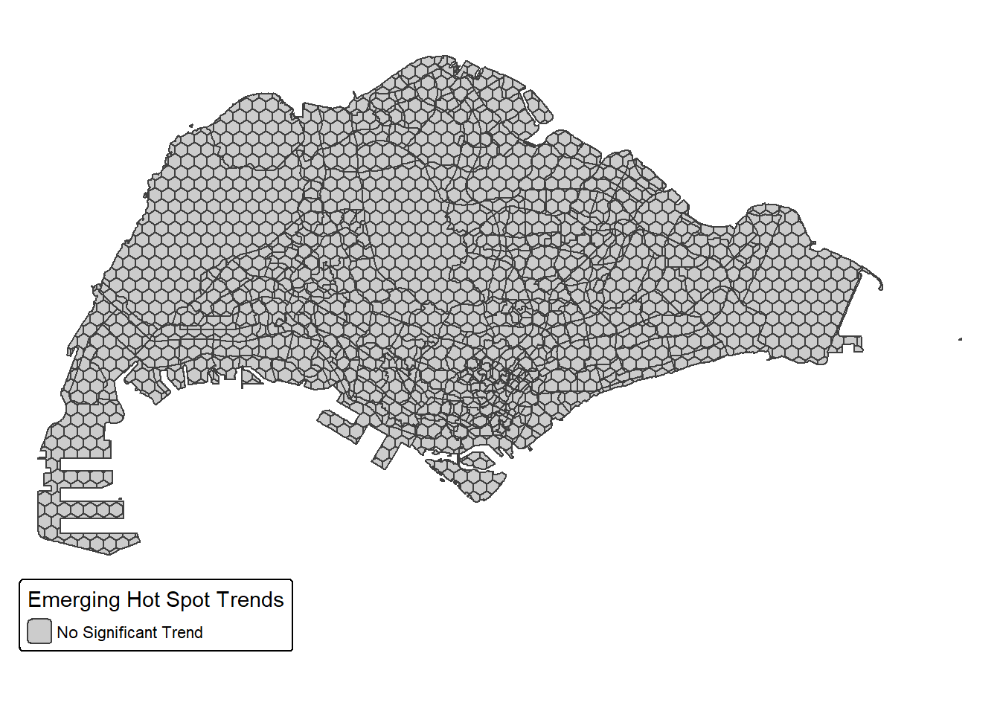
At the standard 95% confidence level, the Mann–Kendall test detected no statistically significant spatial trends across Singapore’s bus trip data. The resulting map shows all hexagons in grey, labelled as “No Significant Trend.” This suggests that with the current 3 month dataset, there is insufficient temporal variation for the test to identify any consistent upward or downward trend in trip intensity. This outcome is expected, as the Mann–Kendall test requires a reasonably long time series to establish monotonic changes.
alpha <- 0.10
gi_trend <- gi_trend %>%
mutate(
trend_sig = !is.na(p_value) & p_value <= alpha,
latest_sign = case_when(
gi_latest > 0 ~ "hot",
gi_latest < 0 ~ "cold",
TRUE ~ "neutral"
),
ehsa_type = case_when(
trend_sig & tau > 0 & latest_sign == "hot" ~ "Emerging Hot Spot",
trend_sig & tau < 0 & latest_sign == "hot" ~ "Diminishing Hot Spot",
trend_sig & tau < 0 & latest_sign == "cold" ~ "Emerging Cold Spot",
trend_sig & tau > 0 & latest_sign == "cold" ~ "Diminishing Cold Spot",
TRUE ~ "No Significant Trend"
)
)
hex_ehsa <- hex_base %>%
left_join(
gi_trend %>% select(hex_id, ehsa_type, tau, p_value, gi_latest, gi_mean),
by = "hex_id"
)tmap_mode("plot")
tm_shape(hex_ehsa) +
tm_polygons(
fill = "ehsa_type",
fill.scale = tm_scale(values = c(
"Emerging Hot Spot" = "red",
"Diminishing Hot Spot" = "orange",
"Emerging Cold Spot" = "blue",
"Diminishing Cold Spot" = "lightblue",
"No Significant Trend" = "grey80"
)),
fill.legend = tm_legend(title = "Emerging Hot Spot Analysis")
) +
tm_borders() +
tm_layout(frame = FALSE)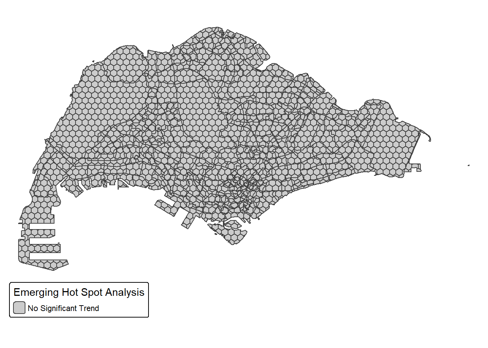
To further explore potential weak signals of change, the alpha level was relaxed to 0.10. However, even with this less stringent threshold, the spatial pattern remained unchanged as all hexagons were still classified as “No Significant Trend.” This reinforces the conclusion that the available three-month period does not provide enough temporal depth for meaningful detection of emerging or diminishing hot and cold spots. A longer observation window of 6 to 12 months would be needed to reveal significant spatial–temporal dynamics.
Conclusion
The spatial analyses conducted using Local Moran’s I and Getis–Ord Gi* reveal clear patterns of clustering in passenger trip origins across Singapore. The Local Moran’s I results highlighted distinct high–high clusters during the AM peak hours, particularly within major residential zones where trip generation is dense. In contrast, the PM and weekend periods exhibited weaker spatial autocorrelation, suggesting more dispersed and balanced travel patterns.
The LISA cluster maps further confirmed that significant clusters are concentrated around transport-intensive regions, while most other areas remain statistically insignificant. Meanwhile, the Getis–Ord Gi* results complemented these findings by emphasizing consistent zones of high trip intensity, reinforcing the areas of strong local clustering.
The Emerging Hot Spot Analysis (EHSA) extended these results by examining temporal trends in the spatial patterns. Although the three-month observation window was too short to produce statistically significant trends, the analysis framework establishes a strong basis for future monitoring. With a longer time series, EHSA can reveal whether these high-demand zones are emerging, intensifying, or stabilizing over time.